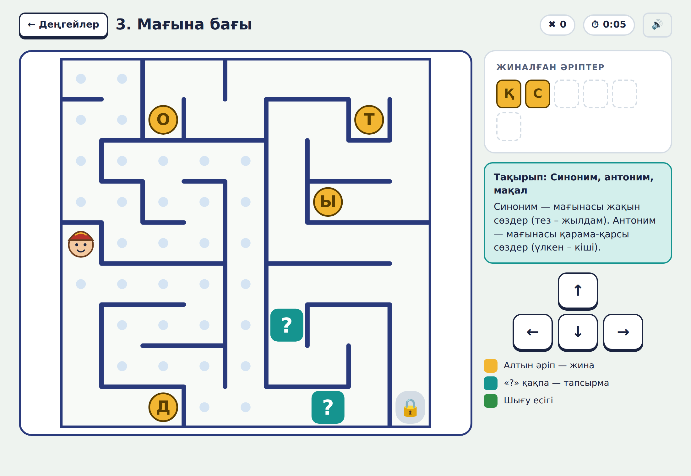
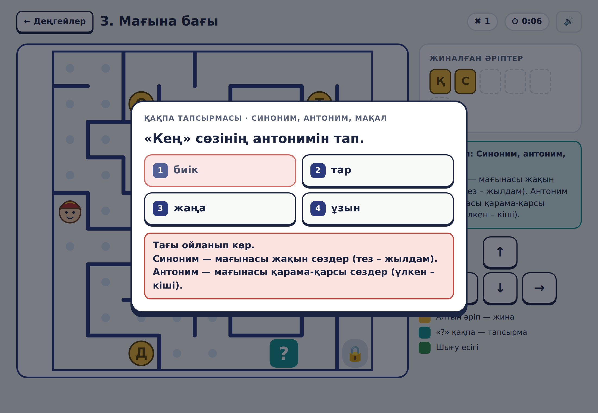

Қазақ тілі сабағында ереже көп: дыбыстар, буын, көптік жалғау, сөз таптары. Сыныптастарым оларды шатастырады. Ал ойынды бәріміз жақсы көреміз!
3-сыныпқа арналған қазақ тілі ойынын жасау және оның пайдасын сыныптастарыммен тексеру.
Ойнағаннан кейін тест нәтижесі жақсарады.
Қазақ тілі тапсырмалары бар лабиринт-ойын сыныптастарыма тапсырмаларды дұрыс орындауға көмектесе ме және оларға ұнай ма?


5 деңгей · 65 сұрақ · тест · сауалнама · нәтижелер беті. Жасырын сөздер:
Ойынды __ сыныптасым сынады. Тесттің орташа балы __-ден __-ге өзгерді. Ойын __ оқушыға ұнады.
Болжам расталды / ішінара расталды. Ойын ережелерді қызықты қайталауға көмектеседі.
Ойынды сабақта, үзілісте, үйде пайдалануға болады. Интернетсіз жұмыс істейді. Мұғалім қай сұрақ қиын екенін көреді.
Бір сынып қатысты; тест ойыннан кейін бірден өтті.
Кодты жазуға Claude Code (ЖИ) көмектесті. Идея, ереже, сөздер, тексеру, деректер – автордікі. Толығы – ЖИ декларациясында.